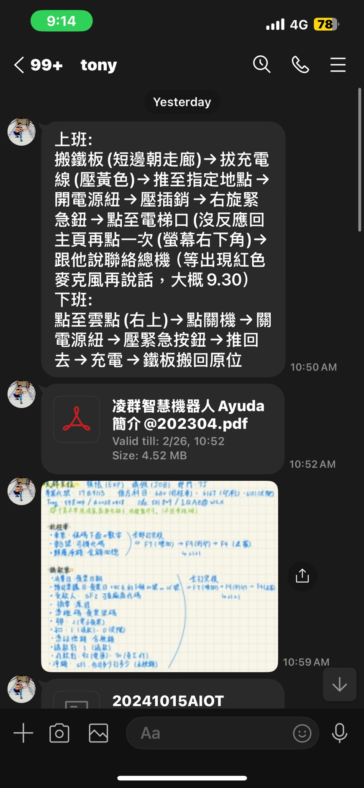

工作內容
工作環境介紹
凌群電腦總公司在台北市萬華區峨嵋街115號，我的實習地點位於台北市萬華區成都路102號2樓，進出大樓跟搭電梯要刷員工證，可以掃臉進出辦公室。環境新穎、設備齊全、上班時間彈性，8:30-9:00都能上班，中午休息90分鐘。主管友善，有問題都可以問，辦公氛圍年輕活潑，讓我在工作上沒有太大壓力。
工作詳述
使用公司報帳系統
學習使用內部系統，登錄報帳單並呈核。
智慧城市展準備與現場支援
協助展覽前期準備、現場產品介紹及論壇工作支援。
測試 Ayuda 機器人功能
模擬問答測試中英文回應準確性，並通報錯誤。
搜尋防火牆展覽資訊
協助主管查詢適合公司產品參展的自動化安全技術展。
整理報表與分析
彙整106–114年報表，使用Excel進行數據整理與樞紐分析。
協助撥打業務與廠商電話
依主管指示與廠商聯繫，確認出席狀況或合作意願。
實習成果
- 完成智慧城市展支援與攤位介紹
- Ayuda 機器人中英測試完成
- 報表整合並建立樞紐分析表
所學與成長
技能學習
熟悉 Excel 應用，提升數據處理與分析能力。
軟實力提升
- 時間管理能力強化
- 溝通與抗壓能力進步
學用合一實踐
系統測試與異常通報流程運用於機器人測試，並結合 Excel 分析進行報表統整。
自主學習與解決能力
利用空檔時間精進英文與新聞閱讀，學會主動尋求協助解決問題。
實習心得
透過為期近四個月的實習，從學生逐步轉化為準職場工作者。參與智慧城市展與 Ayuda 機器人展示，不僅提升了臨場反應與溝通技巧，也讓我更加了解職場的真實面貌，啟發對未來職涯方向的思考。